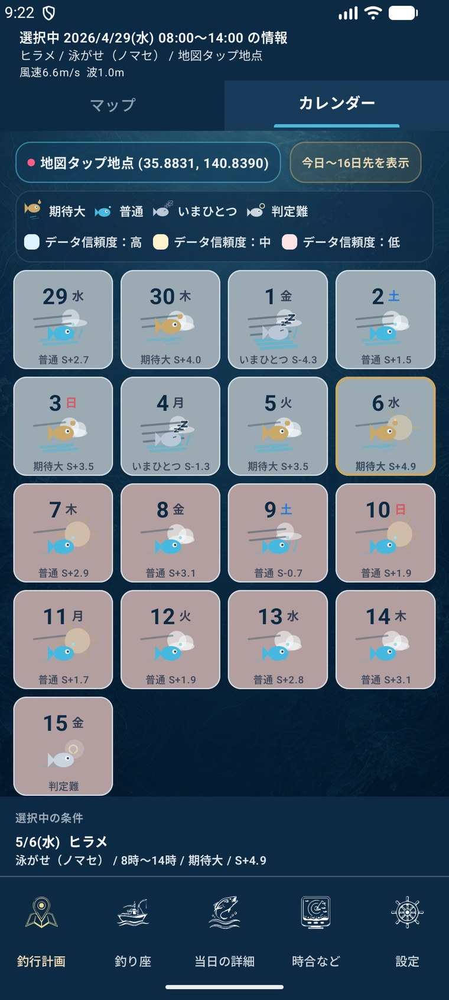
カレンダー一覧
今日から先の日程を並べ、期待度、スコア、データ信頼度を比較しながら候補日を選べます。
船釣り向け 海況確認・釣り座提案アプリ
DRIFIXは、風・潮・波・月齢・魚種・釣法をもとに、船釣りの座席選びをサポートするアプリです。 カレンダーで狙いやすい日を確認し、そのまま釣り座候補まで進めるので、釣行前の計画と当日の判断を画面ごとにわかりやすく整理できます。 当日の詳細では海況をまとめて確認し、比較モードでは候補席を横並びで見比べられます。
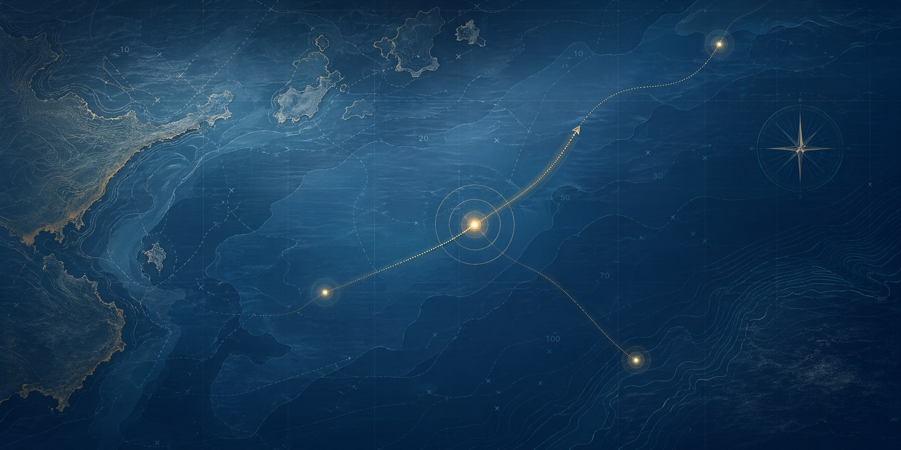
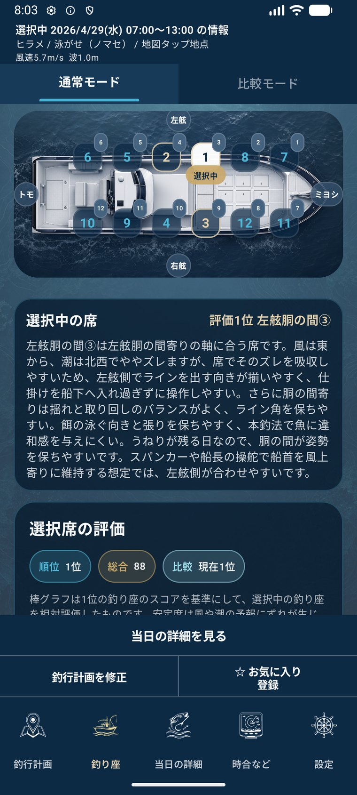
Closed Test
DRIFIXの改善に協力いただける方は、Microsoft Formsから参加希望を送信できます。 回答フォームは外部サイトで開きます。
Calendar Mode
今日から先の日程をカードで並べ、期待度、スコア、データ信頼度を見ながら釣行日の候補を探せます。 気になる日をタップすると、波・風・天気・潮・時合・月齢・データ信頼度の評価内訳を確認し、その日程で魚種や時間帯の設定へ進めます。

今日から先の日程を並べ、期待度、スコア、データ信頼度を比較しながら候補日を選べます。
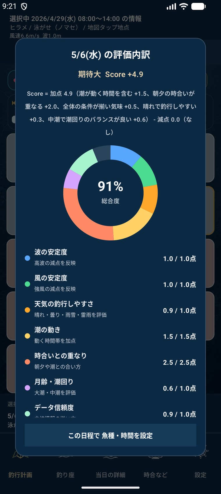
波、風、天気、潮、時合、月齢、データ信頼度の点数を確認してから日程を決められます。
3ステップ
カレンダーで狙いやすい日を見つけ、場所と条件を整え、海況と席の傾向を確認。DRIFIXは船釣りの準備をひとつの流れで整理します。
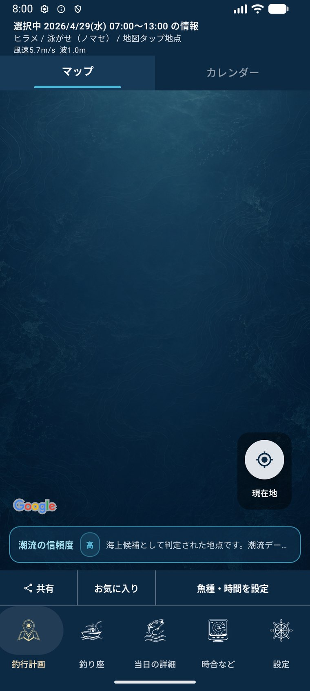
Step 1
地図タップ、釣り場選択、現在地から釣行エリアを指定。周辺の条件を見ながら計画できます。
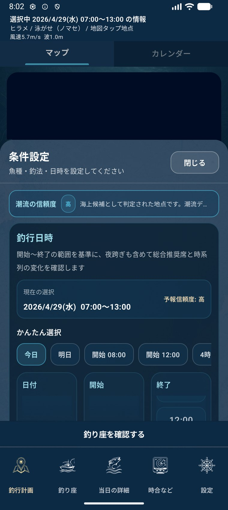
Step 2
魚種、釣法、日付、時間帯を設定。カレンダーで候補日を見てから、釣り方に合わせた条件で海況を整理します。
Step 3
推奨席、当日の詳細、時間帯別の傾向、席ごとの比較、注意情報を確認。納得感のある席選びをサポートします。
主な機能
過度に断定せず、釣行前の準備と当日の確認に使いやすい参考情報として表示します。
エリア指定
地図タップ、現在地、登録済みの釣り場から場所を選択。座標ベースでも条件を確認できます。
海況確認
風、潮、月齢、波などの情報をまとめて表示。強風や高波の注意も確認できます。
席の傾向
風向、潮、波、釣法、魚種などをもとに、候補席をランキング形式で表示します。
カレンダー・時間帯
カレンダーで日ごとの期待度とスコアを確認し、カードをタップして評価内訳を見てから釣り座候補へ進めます。
当日の詳細・比較
当日の海況を確認したうえで、比較モードでは最大4席を選び、総合、左右、前後、風、潮などの評価軸を見比べられます。
理由の補助
選択中の席、上位席との比較、スコア内訳、補足情報を表示。AI説明が利用可能な場合は自然文でも補助します。
記録
よく使う条件をお気に入り登録。釣行メモとして魚種、釣法、月齢、潮、座標、釣り座を共有できます。
船上の見え方
船首、トモ、右舷、左舷の位置関係を画面上で確認しながら、席ごとの傾向と理由を読み解けます。
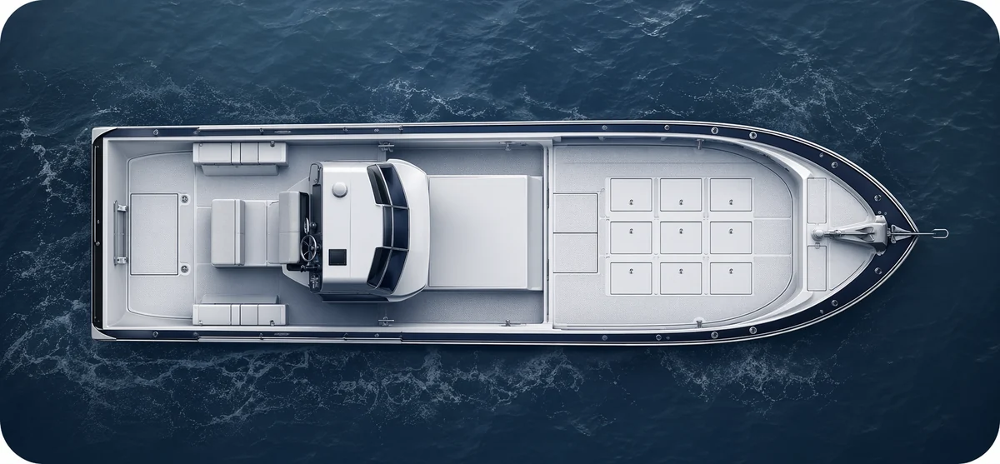
画面紹介
地図、条件設定、カレンダー、評価内訳、海況、席の推奨、比較モード、時間帯の推移まで、実際の画面で確認できます。
地図タップ地点や現在地から、釣行エリアの条件を見始められます。
魚種、釣法、日付、開始・終了時刻をまとめて設定できます。
先の日程をカードで並べ、期待度、スコア、データ信頼度から候補日を探せます。
カレンダーカードをタップして、期待度の根拠を項目別の点数で確認できます。
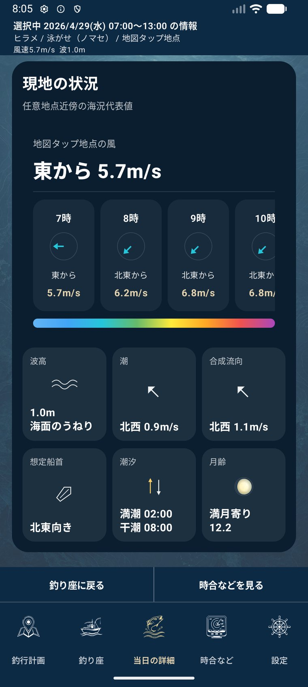
風向風速、波、潮、月齢などをひとつの画面で確認できます。
候補席の順位と選択中の席の理由を、船の配置と一緒に見られます。
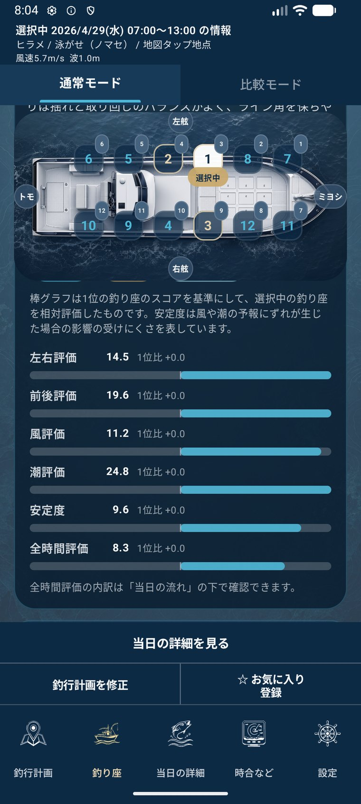
左右、前後、風、潮、安定度などの評価を比較しながら確認できます。
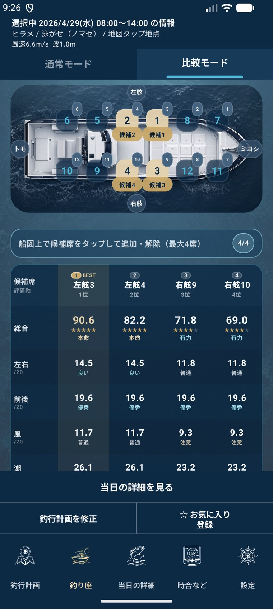
船図で候補席を選び、総合、左右、前後、風、潮などを横並びで比べられます。
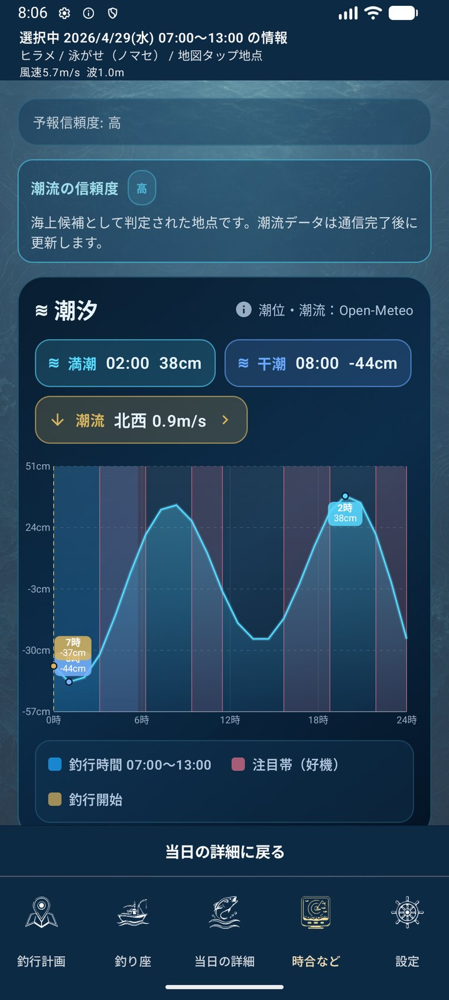
潮汐や注目帯、釣行時間帯の位置づけをタイムラインで確認できます。
使い方
DRIFIXは、機能を並べるだけではなく、日程選びから釣り座確認まで、釣行の場面ごとに必要な情報を確認しやすくすることを目指しています。
カレンダーで期待度やスコアを見ながら候補日を探し、カードの評価内訳で根拠を確認する。
明日の風、波、潮、月齢を確認し、魚種と釣法に合わせて候補席を見ておく。
選んだ日付と時間帯の風、波、潮汐、月齢をまとめて確認し、釣り座判断の前提をそろえる。
比較モードで複数席を横並びにし、総合点だけでなく左右、前後、風、潮の差を見て選ぶ。
現在地や釣り場周辺の条件を見ながら、風や波が強い場合の注意も確認する。
時間帯ごとの傾向や比較モードの評価軸を見て、釣り座の特徴を把握する。
条件をお気に入りに保存し、釣行メモとして共有する。
DRIFIXの表示は釣行判断を補助する参考情報です。実際の出船可否や安全判断は、船長・遊漁船・気象海況情報の最新案内に従ってください。
安心して使うために
DRIFIXは、現在地表示や海況取得のために位置情報を利用する場合があります。 利用はユーザーの許可に基づいて行い、海況取得や品質改善のために必要な範囲で外部サービスやFirebaseを利用します。 詳しくは下記のプライバシーポリシーをご確認ください。
Privacy Policy
以下は、DRIFIXアプリにおける情報の取得、利用、第三者サービスの利用、連絡先について説明するプライバシーポリシーです。 Google PlayなどからこのURLに直接アクセスした場合でも、本ポリシーをこのページ内で確認できます。
本アプリは、現在地表示や海況取得のために位置情報を利用します。位置情報の利用は、ユーザーの許可に基づいて行います。
また、取得した位置情報に応じて海況を取得するため、位置情報を海況 API や関連サービスへ送信する場合があります。 そのため、Google Play のデータ セーフティ申告上は、位置情報について「収集」および「共有」に該当する形で申告しています。
本アプリでは、主に以下の目的で Google Firebase を利用します。
Analytics では、個人を特定しない形で操作イベントや利用傾向を記録する場合があります。 たとえば、地図タップ、魚種選択、釣法選択、保存操作などのイベントを確認します。
Crashlytics では、障害解析のため、現在のタブ、地点、魚種、釣法、日時、アプリ状態などの文脈情報を
custom key として記録する場合があります。
本アプリは、次の第三者サービスまたは API を利用することがあります。
各サービスの仕様変更に伴っては、それぞれの公開ポリシーもあわせてご確認ください。
現時点では、ユーザーごとの個別データ削除をアプリから直接リクエストする専用機能は提供していません。 Google Play のデータ セーフティ申告でも、その前提で回答しています。
本アプリでは、通信中のデータ保護に暗号化を利用します。これにより、Google Play のデータ セーフティ申告において 「データは安全に転送されます」と申告しています。
本ポリシーに関するお問い合わせ先は次のとおりです。
Arcadia_Labs
drifix.fishingseatadvisor@gmail.com